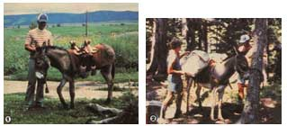
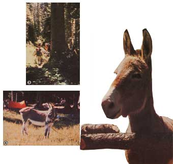

I've always enjoyed almost everything about camping . . . except having to tote a cumbersome pack on my back! In fact, the mere thought of one of those aluminum-tubed nylon muscle strainers-stuffed, as usual, with my favorite backpacking luxuries . . . like a bottle of wine, a cast-iron pan, or a bag of fresh oranges-really used to put a damper on my enthusiasm for taking to the trails.
Once, in an attempt to lighten my pack, my husband and I loaded our faithful yellow dog with the small amount of gear we felt she could handle. The pooch did fine, too . . . un til we got to the woods and she proceeded to lie down in every stream we came across (leaving us with soggy matches and rapidly "rehydrating" dehydrated soup)!
After that fiasco, we began to consider the possibility of purchasing a "low-maintenance" beast of burden that wouldn't be prone to cooling of in creeks. And, since we figured a horse or mule would cost too much to feed, we eventually decided to investigate the practicality of purchasing a donkey. The long eared critters were-we were told-supposed to have terrific endurance . . . good trail sense . . . the ability to handle reasonably heavy loads . . . and excellent dispositions, to boot.
All things considered, therefore, it seemed that a burro might be perfect for us . . . except that there was still a lot we didn't know about this "desert dweller". For example, where-in our northwestern state of Montana -could we even locate one of the beasts? And then, when we did come across a donkey, could we be sure it'd be able to withstand our harsh winters? Well, after a little more research and a lot of looking, we did finally manage to find a burro . . . and (I'm pleased to say) it not only survives our sub-zero weather and lives up to all our expectations, but it's as easy to keep around the farm as it is helpful on our camping ventures!
Actually, finding our beast of burden wasn't all that hard, once we got on the right track. At first-not knowing where else to look-we ransacked the local library for information . . . talked to some of the horse dealers in our area . . . and even let our friends know about our search in hopes that they could help. However, we didn't turn up much of value until we contacted the American Donkey and Mule Society (write, addressing your letter to the attention of Betsy Hutchins at Dept. TMEN, Route 5, Box 65, Denton, Texas 76201). The folks there sent us a list of burro breeders across the country, and a catalog of all the publications their organization has to offer.
Finally, after carefully studying the tips on how to purchase a donkey (in the society's book, The Donkey and Mule as a Backyard Hobby), we felt we were ready to do some educated shopping on our own. In no time we found and bought a two-year-old, standard sized about 48 inches from the ground to the top of the shoulders or withers-female burro (jenny or jennet). She was friendly but green (untrained), and cost less than $100.
Though we did have some problems with her at first, we realized that an unschooled youngster was bound to have a few bad habits. At any rate, we were prepared when she balked at being loaded into our truck . . . but when she lay down halfway up the ramp-forcing four of us to push her the rest of the way-we had a few moments of doubt about the wisdom of our new purchase!
However, once we got her home, our misgivings quickly disappeared . . . because we discovered that-contrary to what some people may think-donkeys are not ornery or stubborn unless they're "taught" to be so through abuse or neglect. In fact, they're exceptionally bright and, when treated firmly but with kindness and respect, they can be very loving and obedient. After she got used to us and to her new surroundings, our jenny responded to our book-learned training techniques like a straight A student. At the end of a summer of daily lessons, she knew how to lead . . . ford streams . . . cross rickety bridges ... and walk on pavement without the slightest hesitation! (She still doesn't like getting into the truck . . . but we're working on that!)
While the burro's education was under way, my husband and I went ahead and purchased all the pack equipment we thought we'd need. We were advised, by experienced pack trippers, to buy the best gear we could afford, so we ended up spending $175 . . . on a good sawbuck saddle and pad, a sturdy halter, and a well-made pair of panniers.
And, by the following summer, our diligent little student was ready for her final examination . . . which she passed with flying colors! Not only could she carry close to 70 pounds as easily as I could tote a 5-pound daypack, but she rarely shied or balked at anything (even a bird flushing out of the underbrush near her feet failed to excite the jenny). In short, she was a champ on the trail.
We've since discovered that caring for our cheerful camping mate is just as easy when she's on our farm. During the warmer months, we give her the run of a three-acre pasture (which she's more than happy to share with a cow or a horse, if asked to). And, when the weather turns cold, we put her up at night in a cozy donkey-sized stall. Her feed consists of a few sections of hay a day plus a couple of cups of grain or pellets on exceptionally chilly nights. Other than that, we simply see to it that she's wormed and vaccinated in the fall and that she has her hoofs trimmed three times a year by a farrier.
All in all, aside from a few minor-and even somewhat amusing-quirks . . . such as her ability to nudge open the pasture gate with her nose, and her adamant intolerance of dogs (which she'll put up with on the trail only if they travel well in front to allow her to keep an eye on them!), our jenny is a delight to have around. And her continued willingness to take the weight off my shoulders (on the trails) has endeared the burro to my backpacking heart forever!
First and foremost, you need to examine closely the personality of any donkey you might consider purchasing. Keep in mind, too, that sex and age will each have a lotto do with a burro's temperament. For instance, females and gelded males tend to be gentler than jacks . . . and young'uns are usually more trainable (and more highly-spiritedly than adult animals of about five years or more.
Next, look at the burro's conformation. Are its legs straight? What about its body. . . is it compact and sturdy? (Donkeys aren't as muscular as horses or mules, so don't be put off by relatively thin chests and haunches.) Then ask the animal's owner to lead it around at a walk and a trot, so you can determine whether its gaits are fairly even and relaxed.
Now, if you're happy with the burro's personality and the way it looks and moves, the next step is to evaluate its health. (You might want to ask a vet or a farrier to examine any animal that you feel is in questionable condition.) Determine whether the coatis thick, or mangy. And, if it is on the scruffy s ide, find out by asking the owner (if you can't tell) whether the condition is due to worms or lice . . . or, perhaps, is just a result of the animal's shedding its winter coat. Once that's taken care of, check the donkey's eyes. They should be bright and alert with no signs of infection and/or mucus. Also be sure there's no unnatural discharge from the ears or the genital area . . . and that there are no swellings or unattended cuts anywhere (examine the head, under the jaw, along the legs, and so forth).
Finally, and likely most important, care fully examine the beast's hoofs. They need to be both tough and pliable . . . not dried out and brittle (which might signal a vitamin deficiency). Keep in mind, though, that over grown hoofs can be easily corrected . . , as can thrush (a fungus that develops in the frog of the foot if an animal is left standing too long on soggy terrain). However, if a burro shows any signs of founder (in which case the soles of the feet will appear dropped, and the animal will walk as if treading on eggs), you'd better forget that critter, because the illness could render it permanently unsound.
|
 [1] Once you've found (and properly schooled) a healthy trail mate, you'll need to gear up with a good sawbuck saddle, a pad, a sturdy halter, and a strong rope. [2] Next, load your critter with a well-made pair of panniers... |
 [3] and you'll be all set for many pleasant hours of hiking, with your own load substantially lightened. [4] When you make camp, just tie your burro nearby and let it graze. |
|